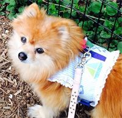
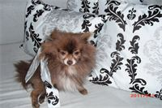

| Red-Dog A. Von Volunteer Rescue Coordinator |
 | Kaiser A. VanWay Volunteer Rescue Coordinator |
|  | Dolly J. Cornish, Communications Coordinator |
 | Carrie J. Siffert, Coordinator |
 | Angela M. Rasmussen, Volunteer Adoptions Coordinator |
 | Boo Boo A. Chang, Volunteer Adoptions Coordinator |
 | Chaplin M. Zinner, Volunteer Photographer |
 | Chelsea S. Parechanian, Volunteer Home Visit Coordinator |
 | Reggie J. Sandler, Volunteer Home Visit Coordinator |  /td> /td> | Gretchen A. King, Event Coordinator |
 | Marco N. Tepper, Volunteer Home Visit Coordinator |